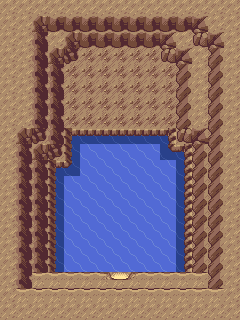

Skip to content
Origin Jade
Pokémon, moves, items, places …
Open search
/
DE
EN
Home
Game
Getting started & FAQ
Credits
Pokédex
All Pokémon
World
Overview
Kanto
Johto
Hoenn
Battles
All trainers
Database
Moves
Abilities
Items
TMs & HMs
Berries
Type chart
Guides
Breeding
Shiny Pokémon
Legendary Pokémon
Gifts & in-game trades
Pokéblocks
Completing the Pokédex
Key items
Home
World
Hoenn
Scorched Slab
Hoenn · Cave, forest or tower
Scorched Slab
Hoenn
1 item
Region
Hoenn
Entrances
Route 120

Items
Item balls and hidden items at this place.
TM11
Sunny Day

 TM11Sunny Day
TM11Sunny Day